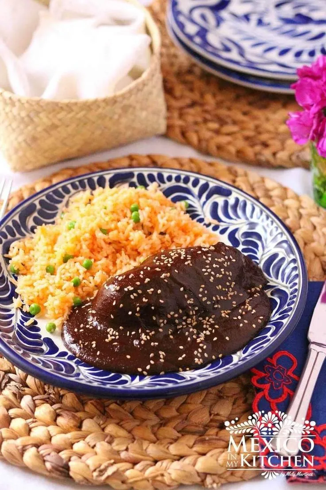

Mole poblano
Ingredientes:
- 4 chiles anchos secos
- 2 chiles pasilla secos
- 2 chiles mulatos secos
- 3 tomates rojos
- 1 cebolla blanca, cortada en trozos grandes
- 3 dientes de ajo
- 1 tortilla de maíz
- 1/4 taza de almendras
- 1/4 taza de cacahuetes (maní)
- 1/4 taza de pasas
- 1/4 taza de ajonjolí (sésamo)
- 1/4 taza de pepitas de calabaza (semillas de calabaza)
- 1 rama de canela
- 3 clavos de olor
- 1/2 cucharadita de comino
- 1/2 cucharadita de tomillo
- 1/2 cucharadita de orégano seco
- 1 tableta de chocolate de mesa (aproximadamente 100 gramos)
- 1 litro de caldo de pollo o vegetal
- Sal al gusto
- Aceite vegetal
Instrucciones:
- Comienza por limpiar los chiles anchos, pasilla y mulatos. Retira las semillas y las venas de los chiles y dóralos ligeramente en una sartén caliente sin aceite durante unos segundos por cada lado. Luego, colócalos en un tazón y cúbrelos con agua caliente. Déjalos remojar durante unos 15-20 minutos, o hasta que estén suaves.
- Mientras los chiles se remojan, asa los tomates, la cebolla y los dientes de ajo en una sartén caliente o directamente sobre la llama de la estufa hasta que estén ligeramente carbonizados por fuera y suaves por dentro. Retira del fuego y reserva.
- En la misma sartén, tuesta la tortilla de maíz hasta que esté ligeramente dorada y crujiente. Luego, tuesta las almendras, los cacahuetes, las pasas, el ajonjolí y las pepitas de calabaza hasta que estén dorados y fragantes. Retira del fuego y reserva.
- En una olla grande, calienta un poco de aceite vegetal a fuego medio. Agrega la canela, los clavos de olor, el comino, el tomillo y el orégano seco, y saltea durante unos minutos hasta que estén fragantes.
- Escurre los chiles remojados y agrégalos a la olla junto con los tomates asados, la cebolla asada, los dientes de ajo asados, la tortilla tostada y los frutos secos y semillas tostados. Cocina durante unos minutos, revolviendo constantemente, para que los sabores se mezclen.
- Agrega la tableta de chocolate de mesa a la olla y cocina hasta que se derrita y se incorpore completamente a la mezcla.
- Transfiere la mezcla a una licuadora y añade el caldo de pollo o vegetal. Licúa todo hasta obtener una salsa suave y homogénea. Si es necesario, puedes añadir más caldo para ajustar la consistencia de la salsa.
- Regresa la salsa a la olla y cocina a fuego lento durante unos 20-30 minutos, o hasta que se espese ligeramente y los sabores se hayan desarrollado completamente. Rectifica la sazón con sal al gusto.
- Sirve el mole poblano caliente sobre pollo cocido o asado, y acompaña con arroz blanco y tortillas calientes. ¡Disfruta de este clásico platillo mexicano lleno de sabor y tradición!
¡Espero que disfrutes de esta receta de mole poblano! Si tienes alguna pregunta, no dudes en hacerla.